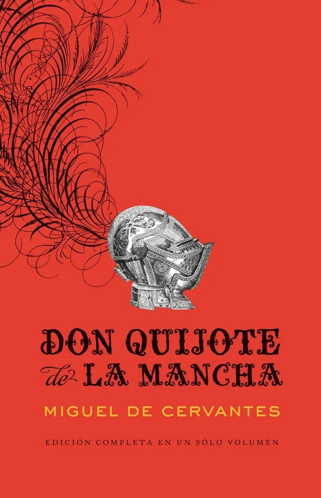
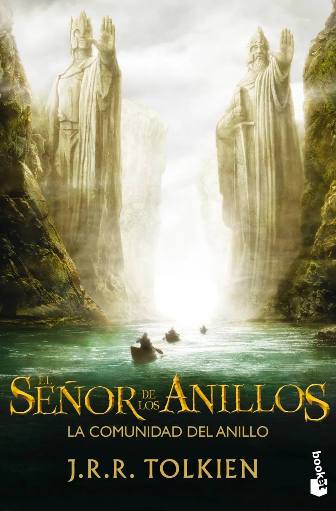

1. Don Quijote de la Mancha(500 millones de libros vendidos)
Miguel de Cervantes
Don Quijote de la Mancha es una novela escrita por el español Miguel de Cervantes Saavedra. Publicada su primera parte con el título de El ingenioso hidalgo don Quijote de la Mancha a comienzos de 1605, es la obra más destacada de la literatura española y una de las principales de la literatura universal. En 1615 apareció su continuación con el título de Segunda parte del ingenioso caballero don Quijote de la Mancha. El Quijote de 1605 se publicó dividido en cuatro partes; pero al aparecer el Quijote de 1615 en calidad de Segunda parte de la obra, quedó revocada de hecho la partición en cuatro secciones del volumen publicado diez años antes por Cervantes.
Es la primera obra genuinamente desmitificadora de la tradición caballeresca y cortés por su tratamiento burlesco. Representa la primera novela moderna y la primera novela polifónica; como tal, ejerció un enorme influjo en toda la narrativa europea. Por considerarse «el mejor trabajo literario jamás escrito», encabezó la lista de las mejores obras literarias de la historia, que se estableció con las votaciones de cien grandes escritores de 54 nacionalidades a petición del Club Noruego del Libro en 2002; así, fue la única excepción en el estricto orden alfabético que se había dispuesto.
2. Historia de dos ciudades(Más de 200 millones de libros vendidos)
Charles Dickens
Historia de dos ciudades (en inglés: A Tale of Two Cities) es una novela del escritor británico Charles Dickens. Esta novela es particularmente distinta a las demás que escribió, las cuales se basan en su mayoría en historias protagonizadas por niños o adolescentes y muestran una intención de reprimenda o denuncia de la sociedad británica de la época. En esta novela histórica se narra la vida en el siglo XVIII, en la época de la Revolución francesa.
Al mismo tiempo la historia se desarrolla en dos países: Inglaterra y Francia, y en las ciudades de Londres y París, respectivamente en la época de los albores de la Revolución francesa. La primera ciudad simbolizaría de algún modo la paz y la tranquilidad, la vida sencilla y ordenada; mientras la segunda representaría la agitación, el desafío y el caos, el conflicto entre dos mundos en una época en la que se anuncia drásticos cambios sociales.
3. El Señor de los Anillos, (150 millones de libros vendidos)
J. R. R. Tolkien
El Señor de los Anillos (título original en inglés: The Lord of the Rings) es una novela de fantasía épica escrita por el filólogo y escritor británico J. R. R. Tolkien.
Su historia se desarrolla en la Tercera Edad del Sol de la Tierra Media, un lugar ficticio poblado por hombres y otras razas antropomorfas como los hobbits, los elfos o los enanos, así como por muchas otras criaturas reales y fantásticas. La novela narra el viaje del protagonista principal, Frodo Bolsón, hobbit de la Comarca, para destruir el Anillo Único y la consiguiente guerra que provocará el enemigo para recuperarlo, ya que es la principal fuente de poder de su creador, el Señor oscuro Sauron.
Contacto
Cualquier consulta me envia un mail
jasrh@gmail.com